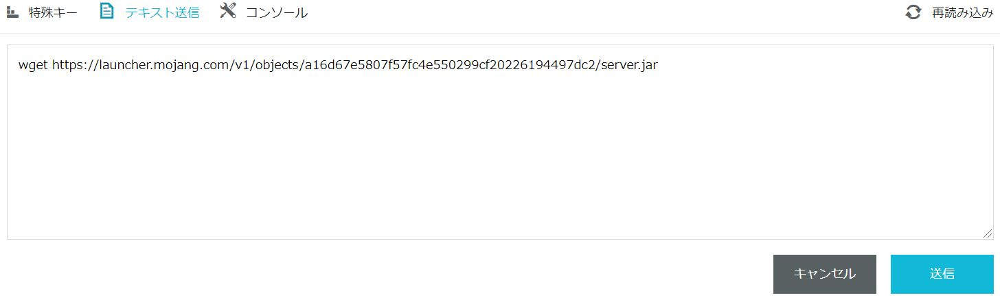
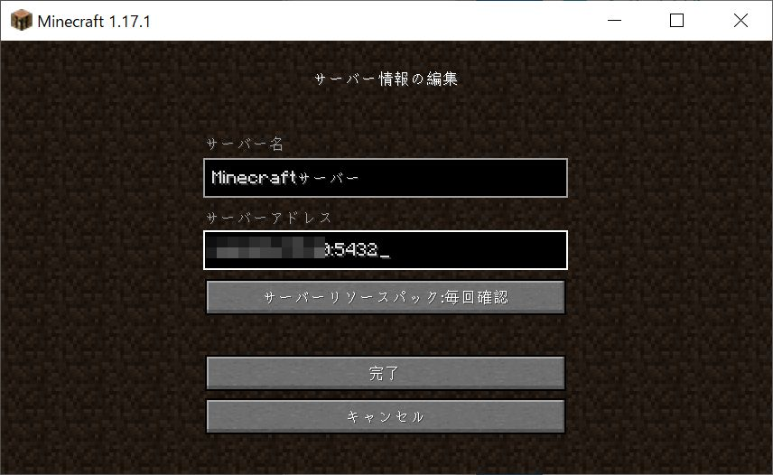
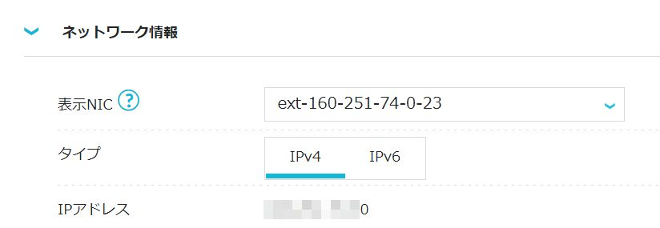
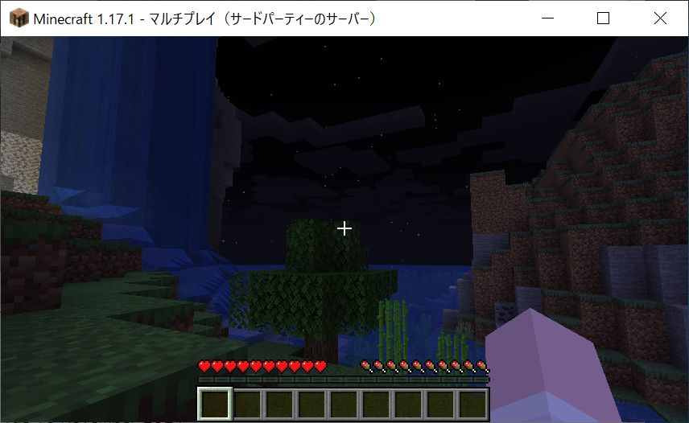
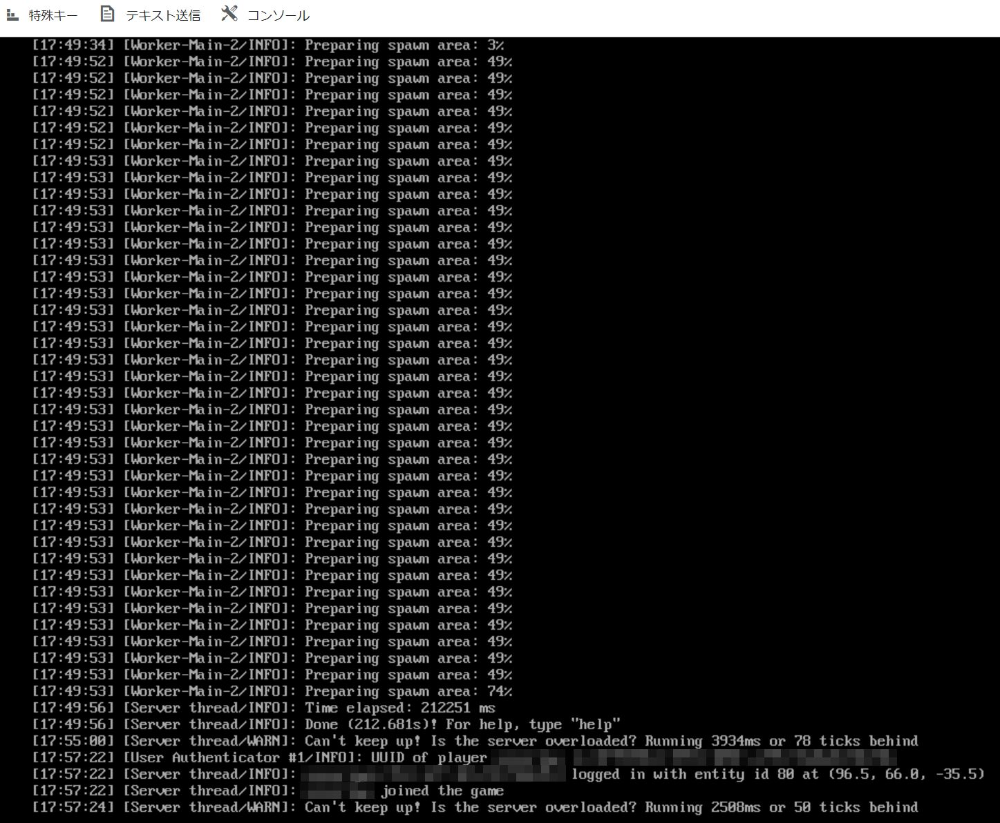

この記事は5/25開催の MIRACLE LINUX Meetup!! でライブデモを行う際の資料です。マインクラフトサーバを建てる時の参考になれば幸いです。イベントページについてはこちらをご覧ください。
前提として、ConoHaの契約を行いコントロールパネルにログインができるようになっていることを想定しています。
設定の流れ
- ConoHaのVPSでサーバを追加
- コンソールを開く
- JAVAのインストール
- マインクラフトサーバの本体をダウンロード
- サーバの初期設定
- ファイヤウォールの設定
- サーバの起動
- ゲームの起動と接続
- （おまけ）提供マップデータのマルチサーバへの適用
手順1 - ConoHaのVPSでサーバを追加
ConoHaのコントロールパネルにログイン後、VPSタブのサーバー追加をクリックし、下記の設定でサーバーを追加します。
- リージョン :
東京 - サービス :
VPS- Minecraftというタブがあり簡単設定もできますが、今回のライブデモではOS標準の状態からサーバーを用意するため選びません。
- VPS割引きっぷ :
利用しない- 今回はデモでサーバーを長期利用しないので利用しません。ずっと使うのであれば安く利用できる可能性があるので検討しても良いと思います。
- (月額料金書いてある部分) :
4GB 3,608円/月- 今回はこのプランを利用します。6人ぐらいまでであればこのプランで良いようです。
- イメージタイプ :
OSタブのMIRACLE LINUX 8.4 (64bit) - root パスワード : 表記通りに9〜70文字で半角英数記号の組み合わせでお好みのものを。
- ネームタグ : そのままでも構いませんし、
Minecraft-serverなどわかりやすく名づけても良いと思います。
オプションを見るをクリックして展開します。
- 自動バックアップ :
無効 - 追加ディスク :
使用しない - 接続許可ポート IPv4 :
指定ポートのみ許可→Postgre/SQL(5432)のみチェック - 接続許可ポート IPv6 :
全て拒否 - SSH Key :
使用しない - スタートアップスクリプト :
使用しない
画面右側の追加をクリックしてください。少し待つと画面が遷移して指定したネームタグのサーバがサーバーリスト画面に表示されます。追加したサーバーのステータスが構築中になり、30秒前後待つと起動中になってサーバーが起動します。
手順2 - コンソールを開く
追加したサーバーのネームタグ部分をクリックすると、サーバーの操作が可能になります。画面中央上部にコンソールボタンがあるのでクリックすると新しくウィンドウが立ち上がり、サーバーのコンソール画面が表示されてキーボードからコマンドを入力できるようになります。
先ほどの手順でrootパスワードを設定しました。今回のライブデモではroot
ユーザで作業を行います。rootユーザでログインを行うため、ユーザ名のrootと入力してEnterキーを押します。
MIRACLE LINUX 8.4 (Peony)
Kernel 4.18.0-348.12.2.el8_5.x86_64 on an x86_64
xxx-xxx-xxx-xxx login: root
次の行に移り、パスワードを求められるので先ほど設定したパスワードを入力します。パスワードの入力についてはキーボードで押したボタンが画面上に表示されませんがそのまま入力して最後にEnterキーを押してください。
Password:
ログインに成功すると、一番最後の行がコマンドを受け付ける状態になります。
[root@xxx-xxx-xxx-xxx ~]#
これ以降、コマンドを打つ際に上記の表記を省略して#だけ行頭に表記しておきます。#より後ろのコマンドを打って、Enterキーを押すことでコマンドを実行することを繰り返す流れになります。行頭に#が無い行はコマンドの実行結果として表示される出力です。
手順3 - JAVAのインストール
マインクラフトサーバの本体を動かすために、JAVAのランタイムというものが必要です。下記のコマンドでインストール可能です。 それなりに大きいファイルのダウンロードがあるので終了まで数分かかるかもしれません。
# dnf -y install java-latest-openjdk-headless
NOTE: JAVAのバージョンは複数ありますが、Minecraft1.17以降はJAVAのバージョン16以降が必要なようです。MLではjava-latest-openjdkほにゃららがバージョン16になります。因みにjava-11-openjdkほにゃららだとバージョン11がインストールされます。
手順4 - マインクラフトサーバの本体をダウンロード
まずはマインクラフトサーバのファイルを置くディレクトリを作成します。そして作業ディレクトリを作成したディレクトリに変更します。
# mkdir minecraft-server
# cd minecraft-server
マインクラフトサーバのファイルをダウンロードします。今回はバージョン 1.18.2 です。下記のようなコマンドは長くキーボードで全て入力するのは大変ですので、このコマンドをコピーしてコンソール上部のテキスト送信をクリックして貼り付け、送信ボタンをクリックします。

# wget https://launcher.mojang.com/v1/objects/c8f83c5655308435b3dcf03c06d9fe8740a77469/server.jar
そしてEnterキーを押して実行します。以降もコマンドについては同じ手順でコピー&ペーストを繰り返すととても楽です。
手順5 - サーバの初期設定
マインクラフトサーバに使用メモリなど指定して実行したいので、そのためのスクリプトを作成します。
# echo -e '#!'"/usr/bin/bash\njava -Xmx3072M -Xms1024M -jar server.jar nogui" > start.sh
この設定についてはConoHaのマイクラゼミに解説があります。
start.shファイルが作成されていると思います。
# ls
server.jar start.sh
start.shはそのままでは実行できません。実行権限を付与しましょう。
# chmod +x start.sh
とりあえず一度起動してみましょう。
# ./start.sh
[00:00:00] [main/ERROR]: Failed to load properties from file: server.properties
[00:00:00] [main/WARN]: Failed to load eula.txt
[00:00:00] [main/INFO]: You need to agree to the EULA in order to run the server. Go to eula.txt for more info.
何やらメッセージが表示されます。それぞれの行で、server.propertiesファイルが見当たらない、eula.txtがロードできない、EULAに同意しないといけないとなっています。
一旦今のファイル一覧を見てみましょう。
# ls
eula.txt logs server.jar server.properties start.sh
ファイルが増えています。EULAに同意するため下記のコマンドを実行します。
sed -i 's/false/true/g' eula.txt
サーバのポートがデフォルトだとtcpの25565番ですが、ConoHaの接続許可ポートを指定するにはAPI操作等が必要になってきます。ですので、簡単に選べる代表的なポートを拝借して5432番ポートを利用するように設定変更します。5432番は元々PostgreSQL用ですが、マインクラフトサーバを立てるにあたり同じサーバでPostgreSQLを動かす事はほとんどないと思うので影響は無いと考えていいと思います。
sed -i 's/25565/5432/g' server.properties
確認は下記のコマンドで可能です。
# grep 5432 server.properties
server-port=5432
query.port=5432
手順6 - ファイヤウォールの設定
MIRACLE LINUXに機能としてあるファイヤウォールを設定します。初期状態では、マインクラフトサーバで設定したtcpの5432ポートへの接続は閉じられていますので、接続を受け付けるように設定します。
# firewall-cmd --add-port=5432/tcp
success
追加されたか確認しましょう。
# firewall-cmd --list-all
public (active)
target: default
icmp-block-inversion: no
interfaces: eth0
sources:
services: cockpit dhcpv6-client ssh
ports: 5432/tcp
protocols:
masquerade: no
forward-ports:
source-ports:
icmp-blocks:
rich rules:
ports行に追加されているのが確認できます。この設定は再起動すると消えてしまうので、永続的に適用するために下記のコマンドを実行しましょう。
# firewall-cmd --runtime-to-permanent
success
successと表示がされればOKです。
手順7 - サーバの起動
ついにマインクラフトサーバを起動します。
# ./start.sh
マップデータの初期化などが行われるので、数分待つことになると思います。
最後にDone (xx.xxs)! For help, type "help"と表示されたらサーバにログインが可能です。
手順8 - ゲームの起動と接続
マインクラフト(バージョン 1.18.2)を起動し、マルチプレイからサーバーを追加をクリックします。サーバー名はわかりやすい値で好きなように設定し、サーバーアドレスにはConoHaのIPv4のIPアドレス:5432を入力し、完了をクリックします。
NOTE:画像は古いバージョンですが1.18.2も同じ画面です。


NOTE: IPアドレスとポート番号の5432の間はコロンという記号で、:です。日本語のキーボードを使っている場合はけの位置です。
追加されたサーバーを選び、サーバーに接続をクリックするとゲームを開始できます。

コンソール画面を見ると、ログインしたことがわかるログが表示されています。

以上で完了です。
おまけ
サイバートラスト株式会社さんがMIRACLE LINUXロゴがイメージされたマップデータとみらくるちゃんのスキンデータを公開してくれました！ 詳細はMinecraft用みらくるちゃんスキンとmapを公開! / みらくるブログをご覧ください。
手順9 - 提供マップデータのマルチサーバへの適用
起動中のサーバのコンソールで/stopと入力してEnterキーを押してください。
サーバの状態が保存され終了し、コマンドを入力するシェルに戻ってきます。
/stop
先ほどのサイトから辿れるGithubからデータをダウンロードします。
# wget https://github.com/miraclelinux/minecraft-miraclelinux-map/archive/refs/heads/main.zip
zip形式で圧縮されているので解凍します。
# unzip main.zip
このデータにはスキンなども入っているので、必要なマップデータのみをマインクラフトサーバの実行フォルダ内に移動します。
# mv minecraft-miraclelinux-map-main/saves/MIRACLE\ LINUX\ MEETUP/ ./
マップデータ名はserver.propertiesファイルのlevel-name行に設定されています。
初期値はworldで同名のフォルダ以下にワールドデータがありますが、配布データはMIRACLE LINUX MEETUPですので、サーバの設定ファイルを書き換えて配布データを読み込むように設定します。
# sed -i 's/=world/=MIRACLE LINUX MEETUP/g' server.properties
確認するとlevel-name行が書き変わっていると思います。
# grep MIRACLE server.properties
level-name=MIRACLE LINUX MEETUP
サーバを起動してクライアントからログインしてみましょう。マップデータが読み込まれ、クライアントからログインを行うとロゴが見えると思います。
# ./start.sh